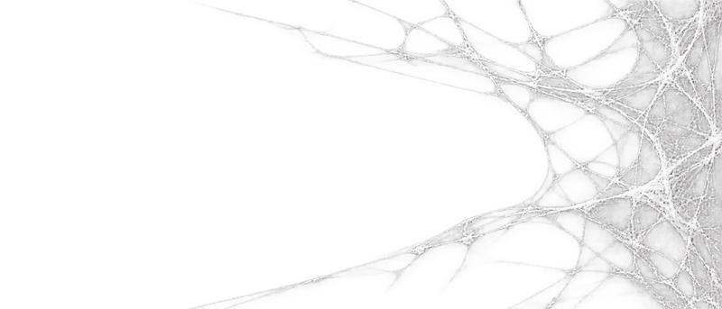
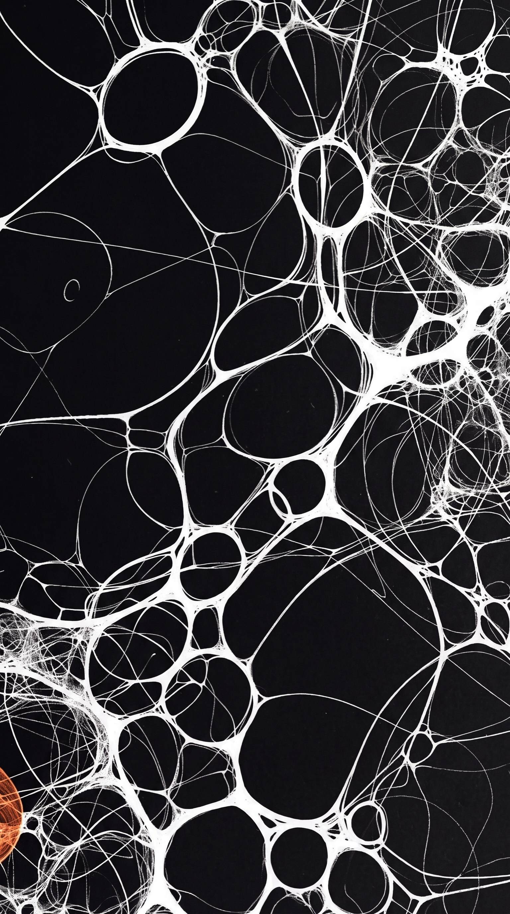
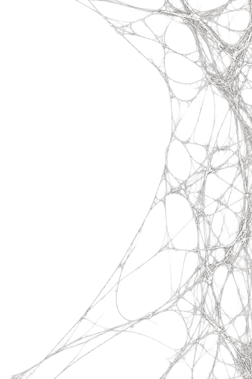
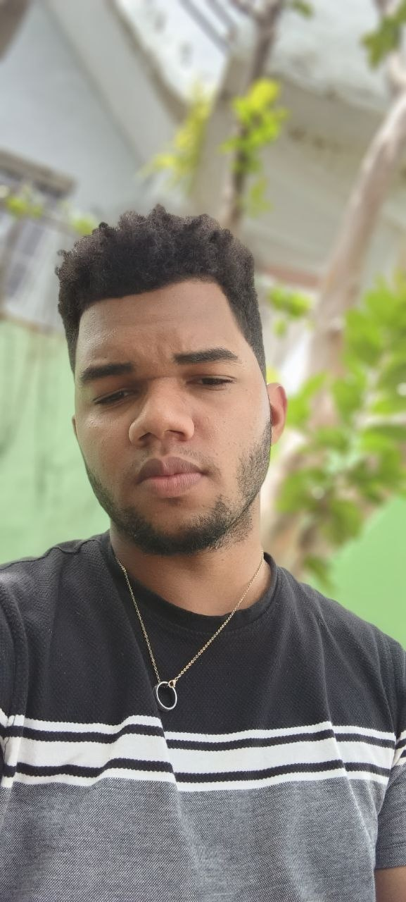
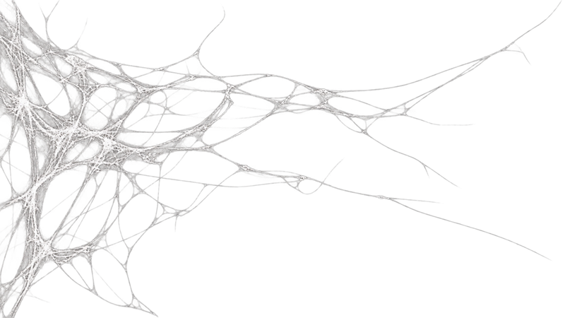

ARTE 3D — destacado
Destacada01 / 04Vintage Optics

Colección de equipo óptico antiguo en un entorno deteriorado. Realismo de materiales, oxidación e iluminación atmosférica. Ver en ArtStation →


01 / Perfil — Sobre mí

Soy Isaac, artista 3D y editor. Mezclo objeto y montaje para piezas claras y directas.
Trabajo 3D (modelado, materiales, iluminación y render) y video (montaje, ritmo y color). Me interesa lo esencial: buena forma, buena luz y un corte a tiempo.
Disponible para freelance, colaboraciones y encargos. Si tienes un objeto que mostrar o una historia que montar, escríbeme y lo vemos en la sección de contacto.
Selección / Vista previa

Colección de equipo óptico antiguo en un entorno deteriorado. Realismo de materiales, oxidación e iluminación atmosférica. Ver en ArtStation →

Comercial de comida: ritmo, montaje y color. Pieza destacada de video.
Qué hago
Modelado hard-surface, UVs limpias, materiales PBR e iluminación para fotogramas que aguantan pantalla grande.
Montaje con ritmo, sincronía de sonido básica, títulos y color. Del bruto al corte final listo para publicar.
En números
Todo lo publicado en esta web, contado. Se actualiza con las piezas que se suben.
Cómo trabajo
Objetivo, referencias y formato de entrega. Sin vueltas.
Tablero de referencias + previsualización / animática para validar antes de producir.
Modelado / render o montaje con revisiones marcadas por código de tiempo.
Máster + versiones vertical / portada. Archivos ordenados.
04 / Contacto